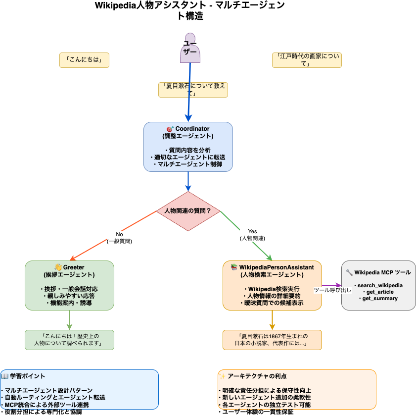

🎯 概要とアーキテクチャ
🎯 学習目標 ADKのマルチエージェント設計とMCP統合の仕組みを理解し、実際に動作するWikipedia人物検索アシスタントを構築・カスタマイズします。
📋 このハンズオンで学べること
🏗️ マルチエージェント設計
Coordinatorパターンによる自動ルーティングと役割分担の設計手法
🔗 MCP統合
Wikipedia MCPサーバーとの連携による外部ツール統合の実装
🎨 プロンプトエンジニアリング
各エージェントの特化した役割設計と効果的な指示文の作成
🐛 デバッグ技法
マルチエージェントシステムの動作確認とトラブルシューティング
🏛️ システムアーキテクチャ

🎨 構造図について
上記の図は agent_architecture.drawio ファイルから生成されており、以下の要素が視覚化されています：
- ユーザー入力の流れ - 様々な質問パターンとその分岐
- Coordinatorの判定ロジック - 人物関連かどうかの自動分類
- 各エージェントの役割 - Greeter/WikipediaPersonAssistantの専門化
- MCP統合 - Wikipedia検索ツールとの連携
- 学習ポイント - このシステムから学べる設計原則
図を編集したい場合は README_diagram.md の手順を参照してください。
🎭 エージェント構成
1
🎯 Coordinator（調整エージェント）
役割： ユーザーの質問を分析して適切なエージェントに自動転送
- 質問内容の自動分類（人物関連 vs 一般質問）
- 適切なエージェントへの自動転送
- マルチエージェント全体の制御
2
👋 Greeter（挨拶エージェント）
役割： 挨拶・一般会話・システム質問への対応
- 親しみやすい挨拶応答
- システム機能の案内
- 人物検索機能への誘導
3
📚 WikipediaPersonAssistant（人物検索エージェント）
役割： 人物に関する詳細情報の検索・提供
- Wikipedia検索による人物情報取得
- 詳細な人物要約の作成
- 曖昧な質問での候補リスト表示
⚡ 動作フロー例
# 例1: 挨拶
ユーザー: "こんにちは"
↓ Coordinator が分析
↓ Greeter に転送
結果: "こんにちは！歴史上の人物について調べられます..."
# 例2: 具体的人物
ユーザー: "夏目漱石について教えて"
↓ Coordinator が分析
↓ WikipediaPersonAssistant に転送
↓ Wikipedia MCP でsearch_wikipedia実行
結果: "夏目漱石は1867年生まれの日本の小説家..."
# 例3: 曖昧な質問
ユーザー: "江戸時代の画家について知りたい"
↓ Coordinator が分析
↓ WikipediaPersonAssistant に転送
↓ 候補リストを表示
結果: "1. 葛飾北斎 2. 歌川広重 3. 円山応挙..."
ユーザー: "こんにちは"
↓ Coordinator が分析
↓ Greeter に転送
結果: "こんにちは！歴史上の人物について調べられます..."
# 例2: 具体的人物
ユーザー: "夏目漱石について教えて"
↓ Coordinator が分析
↓ WikipediaPersonAssistant に転送
↓ Wikipedia MCP でsearch_wikipedia実行
結果: "夏目漱石は1867年生まれの日本の小説家..."
# 例3: 曖昧な質問
ユーザー: "江戸時代の画家について知りたい"
↓ Coordinator が分析
↓ WikipediaPersonAssistant に転送
↓ 候補リストを表示
結果: "1. 葛飾北斎 2. 歌川広重 3. 円山応挙..."
🛠️ 環境構築
🎯 目標 contributing/samplesディレクトリでADK Web UIを起動し、Wikipedia人物アシスタントにアクセスできるよう環境を整えます。
📋 前提条件の確認
1
基本環境の確認
# ADK Python環境があることを確認
python -c "import google.adk; print('ADK is installed')"
# Wikipedia MCPをインストール
pip install wikipedia-mcp
python -c "import google.adk; print('ADK is installed')"
# Wikipedia MCPをインストール
pip install wikipedia-mcp
🔑 API Key設定
2
Google API Keyを設定
# contributing/samplesディレクトリに移動
cd contributing/samples
# .envファイルでAPI Keyを設定
echo "GOOGLE_API_KEY=your_api_key_here" > .env
cd contributing/samples
# .envファイルでAPI Keyを設定
echo "GOOGLE_API_KEY=your_api_key_here" > .env
⚠️ 重要 your_api_key_here を実際のGoogle API Keyに置き換えてください。
API Keyは Google AI Studio から取得できます。
API Keyは Google AI Studio から取得できます。
🌐 ADK Web UI起動
3
Web UIでWikipedia人物アシスタントを起動
# contributing/samplesディレクトリから実行
adk web wikipedia_person_assistant/
adk web wikipedia_person_assistant/
期待する結果：
- Web UIが http://localhost:8080 で起動
- ブラウザが自動的に開く（または手動でアクセス）
- Wikipedia人物アシスタントのチャット画面が表示
✅ 動作確認
4
簡単な動作テスト
Web UIで以下を試して、エージェントが正常に動作することを確認：
# Web UIのチャット画面で入力してテスト
テスト1: "こんにちは"
→ Greeterエージェントからの挨拶応答を確認
テスト2: "夏目漱石について教えて"
→ WikipediaPersonAssistantによる詳細情報を確認
テスト1: "こんにちは"
→ Greeterエージェントからの挨拶応答を確認
テスト2: "夏目漱石について教えて"
→ WikipediaPersonAssistantによる詳細情報を確認
🎉 準備完了！ Web UIが正常に動作していれば、次のステップでエージェントとの対話体験を始められます。
🌐 Web UI体験
🎯 学習目標 ADK Web UIを使って、マルチエージェントシステムの自動ルーティングとMCP統合を実際に体験します。
🎭 マルチエージェント動作体験
1
Coordinatorによる自動ルーティングを体験
Web UIで以下の質問を順番に試して、各エージェントへの自動転送を確認します：
# Web UIのチャット画面で以下を入力
【テスト1】Greeterエージェントへの転送
"こんにちは"
"何ができますか？"
"ありがとう"
【テスト2】WikipediaPersonAssistantへの転送
"夏目漱石について教えて"
"森鴎外の代表作は？"
"坂本龍馬について知りたい"
【テスト1】Greeterエージェントへの転送
"こんにちは"
"何ができますか？"
"ありがとう"
【テスト2】WikipediaPersonAssistantへの転送
"夏目漱石について教えて"
"森鴎外の代表作は？"
"坂本龍馬について知りたい"
🔍 エージェント転送の確認
2
どのエージェントが応答しているかを観察
Web UIでの応答を見て、以下のパターンを確認してください：
👋 Greeter応答の特徴
親しみやすい挨拶、機能案内、人物検索への誘導
📚 WikipediaPersonAssistant応答の特徴
Wikipedia検索実行、詳細な人物情報、出典付きの事実
🎯 自動ルーティングの精度
質問内容に応じた適切なエージェント選択
🧪 境界ケースのテスト
3
判定が難しい質問での動作確認
以下の曖昧な質問を試して、Coordinatorの判定能力を確認：
# 境界ケースのテスト質問
"人について教えて"
"有名な人は誰ですか？"
"江戸時代について知りたい"
"現代の作家について"
"ありがとう、漱石について詳しく"
"人について教えて"
"有名な人は誰ですか？"
"江戸時代について知りたい"
"現代の作家について"
"ありがとう、漱石について詳しく"
観察ポイント：
- 曖昧な質問でもどちらかのエージェントに転送される
- 人物関連のヒントがあれば WikipediaPersonAssistant に転送
- 一般的すぎる質問は Greeter が適切に誘導
⚡ MCP統合の実感
4
Wikipedia検索ツールの動作を確認
人物に関する質問で、実際にWikipedia MCPツールが呼び出される様子を観察：
# Wikipedia MCP動作確認用の質問
"葛飾北斎の代表作を教えて"
"アインシュタインの相対性理論について"
"マリ・キュリーの業績は？"
"存在しない人物XYZについて"
"葛飾北斎の代表作を教えて"
"アインシュタインの相対性理論について"
"マリ・キュリーの業績は？"
"存在しない人物XYZについて"
確認できること：
- 実際のWikipedia検索が実行される
- 検索結果に基づいた詳細な回答
- 検索できない場合の適切な応答
- 日本語Wikipediaからの正確な情報取得
🎉 体験完了！ マルチエージェントの自動ルーティングとMCP統合の動作を実際に確認できました。次のステップではプロンプトを変更して、さらに詳しく動作を理解していきます。
⚗️ プロンプト実験
🎯 学習目標 エージェントのinstructionを変更して、動作がどのように変わるかを実験し、プロンプトエンジニアリングの効果を体験します。
📝 エージェントファイルの確認
1
agent.pyファイルの構造を理解
現在のエージェント設定を確認しましょう：
# agent.pyの内容を確認
cat wikipedia_person_assistant/agent.py
cat wikipedia_person_assistant/agent.py
確認ポイント：
- Greeterエージェントの instruction（親しみやすい口調）
- WikipediaPersonAssistantの instruction（詳細検索）
- Coordinatorの instruction（自動振り分けロジック）
🎨 プロンプト変更実験
2
Greeterエージェントのスタイル変更
agent.pyファイルを編集して、Greeterの応答スタイルを変更してみます：
# エディタでagent.pyを開く
nano wikipedia_person_assistant/agent.py
# または
code wikipedia_person_assistant/agent.py
nano wikipedia_person_assistant/agent.py
# または
code wikipedia_person_assistant/agent.py
実験パターン例
📚 学術的スタイル
「丁寧語で学術的な説明」「正確な用語使用」「出典重視」
😊 カジュアルスタイル
「親しみやすい口調」「絵文字使用」「分かりやすい例え」
🎓 教育的スタイル
「段階的説明」「理解度確認」「関連知識の提供」